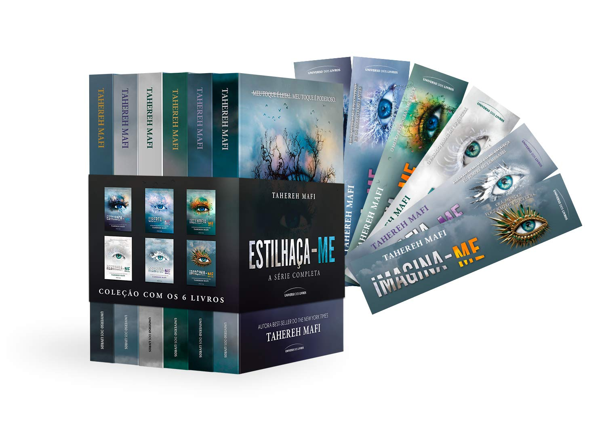

!Estilhaça-me!
O que Acontece Na História?


Estilhaça-me, conta a história pelo ponto de vista de Juliette Ferrars, uma jovem com um poder destrutivo, ao ser tocada pode causar a morte dessa pessoa.
Por isso Juliette foi presa em um manicômio, por ter tirado a vida de uma criança, mesmo que por acidente.Depois de 264 dias de pura solidão Juliette
recebe um companheiro de cela, e um antigo colega de escola, Adam Kent. Mas a vida da jovem sofre uma reviravolta ainda maior quando o líder do Setor 42,
Warner, pede que Juliette se una a ele na luta contra os rebeldes.
Do lado de fora do manicômio temos uma outra história acontecendo. A humanidade destruiu o planeta de forma irreversível, com isso foi necessário um novo
recomeço destruindo tudo aquilo que levou a humanidade ao colapso como politica, religiões, convicções, idiomas, ideologias, individualidade. Essas escolhas
foram feitas por um grupo chamado Restabelecimento. Alguns pouco se rebelaram contra eles e entraram em conflitos diretos, isso deu a Warner — o líder do
Setor 42 — uma ideia, uma ideia que envolvia uma menina com poderes.
Para saber a história completa: Compre na Amazon!
https://www.amazon.com.br
!Muito Obrigada!
#Publi_Amazon!